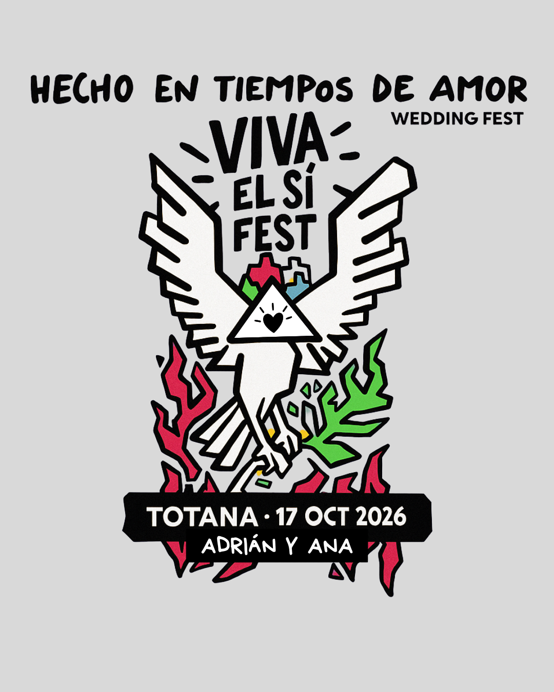

HECHO EN TIEMPOS DE AMOR · WEDDING FEST
Ana & Adrián
SÁBADO · 17 OCT 2026 · TOTANA

Nos casamos y lo celebramos a lo grande
Bienvenido/a a Tiempos de Amor, nuestro festival de un solo día y de un solo "Sí". El sábado 17 de octubre de 2026 nos daremos el "sí quiero" en Totana y queremos vivirlo contigo: ceremonia, cóctel, banquete y fiesta hasta que el cuerpo aguante.
En esta web tienes toda la info del día, cómo llegar y el formulario para confirmar tu asistencia. Échale un ojo con calma. 🎸
Gracias por venir a nuestro festival
De verdad: que estés aquí, leyendo esto, ya nos hace inmensamente felices. Gracias por acompañarnos, por celebrar el amor con nosotros y por formar parte de uno de los mejores días de nuestra vida.
Con todo nuestro cariño, Ana & Adrián.